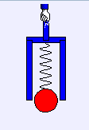

What happens when the cup is released?
與球同時落地的杯子( Falling Cup with Ball model )為一個質點以輕彈簧與杯子內側相連。杯子上下顛倒擺置, 同時質點以懸吊的方式靜止在杯子外, 然後釋放。 在杯子被釋放後發生了甚麼事?
在許多物理演示目錄和網站中, 都會介紹以彈簧相連而處在失重自由落體狀態的兩個質點。 搜尋 Physics Instructional Resource Association 網站以獲得 PIRA 1G20.40的更多資訊。 對此 裝置描述 和關於此演示的 影片 在Maryland物理演示網站上皆可取得。
筆記: 除了彈力之外, 此模型還結合了施於球上的有粘滯性的牽引力 以及, 在墜落過程中聯繫在球與杯子之間的力。
此杯子-質點系統的運動跟內部(彈簧)和外部(重力)的力有關。 在執行電腦模擬實驗前, 請預測質點, 杯子, 和此系統將會有甚麼樣的行為(運動)。
請使用牛頓定律來解釋你的觀察。
修改 Falling Cup with Ball model 以在杯-球系統的質心顯示一個小型標記。 如果杯子被拉住, 質心( 標記 )將會 如何運動? 如果杯子正在下落, 質心( 標記 )將會如何運動? 如果杯子沒有被拉住, 質心能夠向上運動嗎?
加上圖表, 有三個表示杯子, 球, 以及杯-球系統質心之位置為時間函數的曲線。
此模型( Falling Cup with Ball model )是由Wolfgang Christian使用the Easy Java Simulations ( EJS )模型工具( 版本4.2 )所創作的 。 你可以檢驗並修改此物理模擬模型, 前提是你在波函數圖型中點右鍵並選擇安裝Ejs;你可以右鍵點擊模擬動畫; 叫出彈出式菜單並選擇"Open Ejs Model"。
關於 EJS 的更多資訊可以在: <http://www.um.es/fem/Ejs/>取得; 以及the OSP comPADRE collection <http://www.compadre.org/OSP/>.